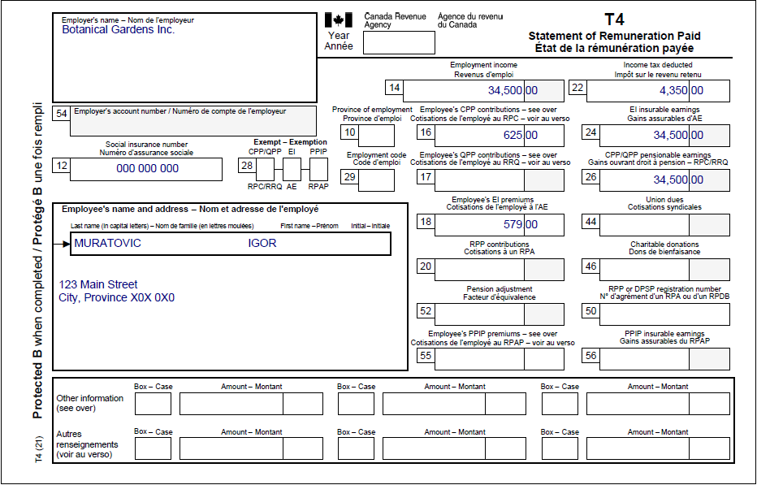

Reporting the sale of a principal residence
Pre-test question
Sorry, that's incorrect
Since 2016, if an individual sells their property, and it was their principal residence for all the years they owned it, they must complete the Principal residence designation section on page 2 of Schedule 3, Capital Gains (or Losses) by checking the box that represents their situation. They must also complete form T2091IND, Designation of a property as a principal residence by an individual (other than a trust).
That's correct
Since 2016, if an individual sells their property, and it was their principal residence for all the years they owned it, they must complete the Principal residence designation section on page 2 of Schedule 3, Capital Gains (or Losses) by checking the box that represents their situation. They must also complete form T2091IND, Designation of a property as a principal residence by an individual (other than a trust).
Instructions
- Open the tax software
- Review the Background information and Required slips (tax slips, receipts, etc.)
- Provide all required information for the appropriate sections of the tax software
- Once completed, compare your results with the solution provided
- Afterwards, refer to the Takeaway points
Background information
Situation
Igor sold his property for $170,000.00 on December 5, 2021. He acquired the property on January 15, 1999, and it has been his principal residence every year he owned it.
Identification information
| Name | Igor Muratovic |
|---|---|
| Social insurance number (SIN) | 000 000 000 |
| Address | 123 Main Street City, Province X0X 0X0 |
| Date of birth | March 15, 1965 |
| Marital status | Single |
Required slips
T4 – Statement of Remuneration Paid (Botanical Gardens Inc.)
Text version of the T4 slip
T4 – Statement of Remuneration Paid
Protected B
Employer’s name: Botanical Gardens Inc.
Employee’s name and address:
Last name: Muratovic
First name: Igor
123 Main Street
City, Province X0X 0X0
Box 12: Social insurance number: 000 000 000
Box 14: Employment income – line 10100: 34,500.00
Box 16: Employee’s CPP contributions – line 30800: 625.00
Box 18: Employee’s EI premiums – line 31200: 579.00
Box 22: Income tax deducted – line 43700: 4,350.00
Box 24: EI insurable earnings: 34,500.00
Box 26: CPP/QPP pensionable earnings: 34,500.00
Review your results
Solutions will be available in February 2023 as printable PDF.
Takeaway points
Steps to follow
- Review their background information and required slips
- In CRA Questions, select Yes from the Did you sell a principal residence in 2022? drop-down menu
- In Interview setup, tick the box next to Employment income and employment insurance benefits (T4, T4E/RL-6) in the Employment income and other benefits section
- Click T4 and employment income in the left side menu and click the + sign next to T4 to enter the tax slip information
- Click Capital gains (or losses) and ABIL in the left side menu and click the + sign next to Personal use property (Including the principal residence)
- Enter the dates into the Date of acquisition (dd-mm-yyyy) and Date of disposition (dd-mm-yyyy) fields
- Enter $170,000.00 into the Proceeds of disposition field
- Complete the Principal residence, Address of the principal residence and Designation sections
Since the property Igor sold was his principal residence for all the years he owned it, it does not affect his eligibility for CVITP services. Igor has to report the sale on his tax return because the sale of the principal residence occurred after 2016. The software automatically completes Schedule 3 and form T2091.